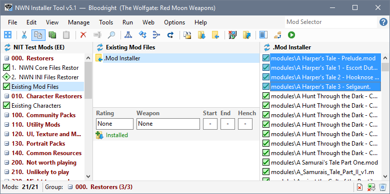
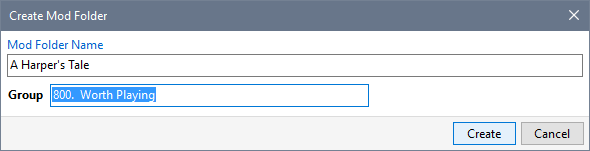
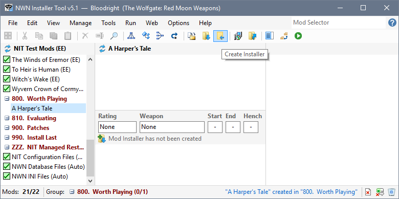
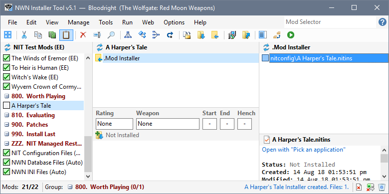
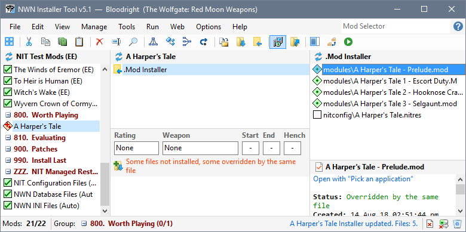
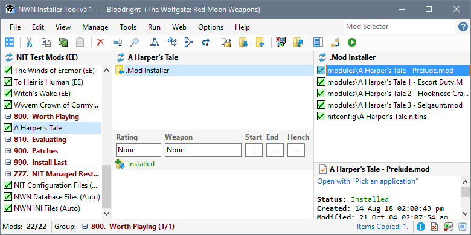

You can use files from Restorers to create Mods so you can record information and play times about the Mods that were installed by other tools such as the Windows File Explorer.
- Select the Mod files in the Details panel that you want to use to define the NIT Mod and click Copy from the Edit menu or the toolbar.

- Click New Mod from the Manage menu, type the name you want to assign to the Mod, select the Group in which it should be created and click Create.

- Click Create Installer from the Manage menu or the toolbar.

- Click in the Details panel and then click Paste from the Edit menu or toolbar.

- Click Install from the Manage menu or toolbar so that the Mod is shown as installed.

- You can now record the Mod's Web Page Link, make notes and record information.

Related Topics
Save your customised INI files
Move non-NIT Mod folders to the Installer Tool
Create Restorers to backup installed Files
Create NIT Mods from Restorers